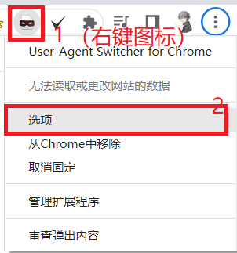
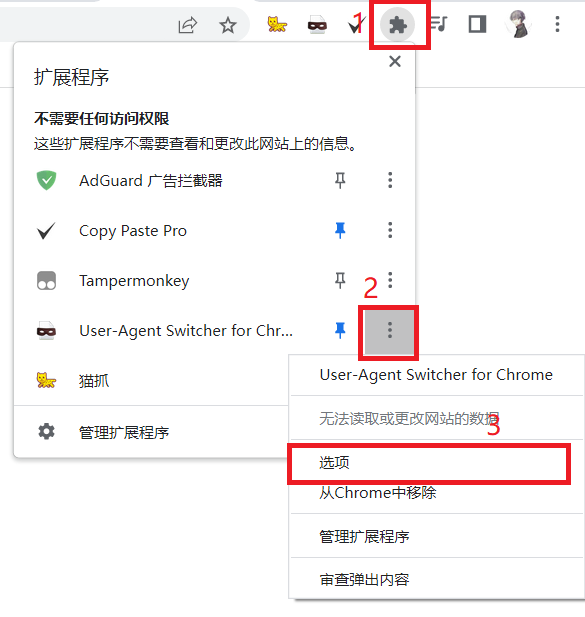
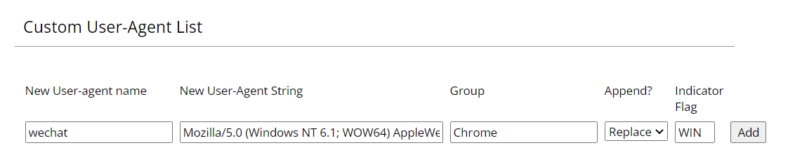
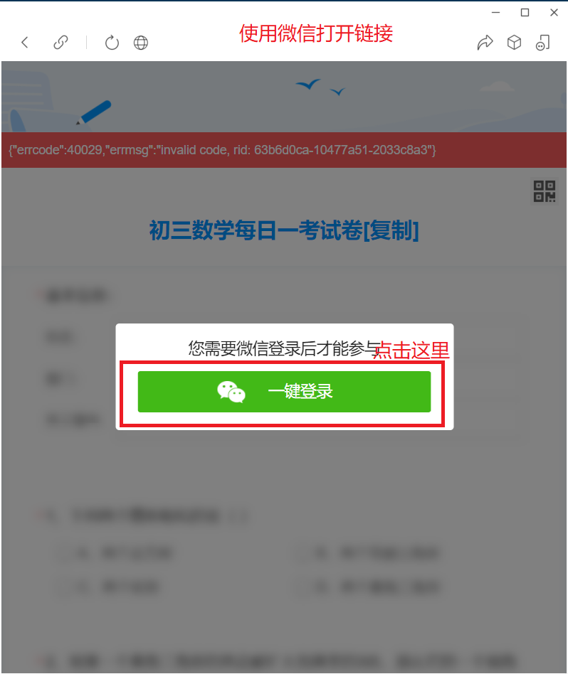
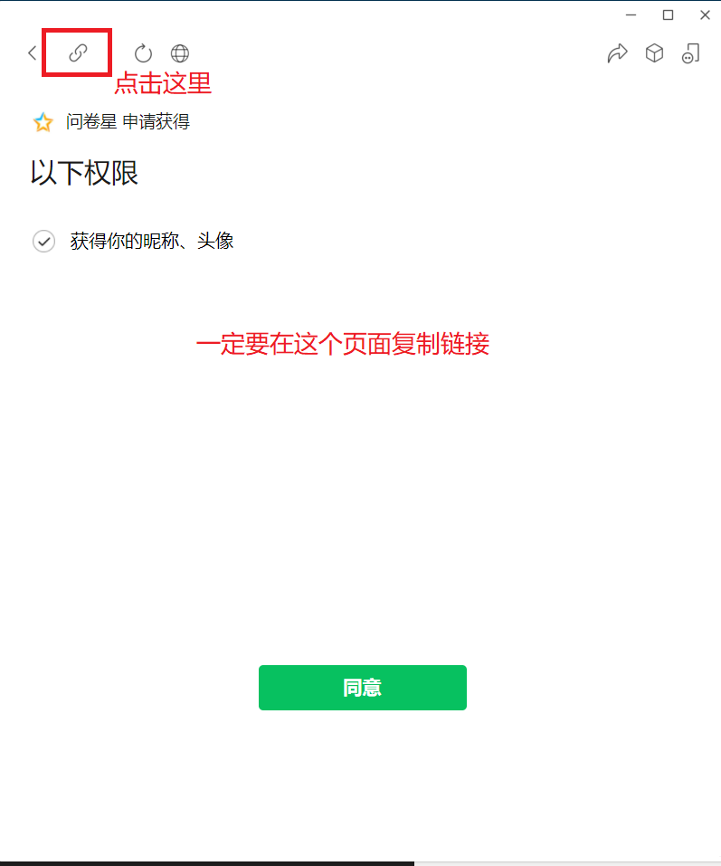
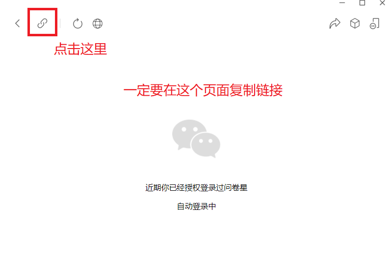
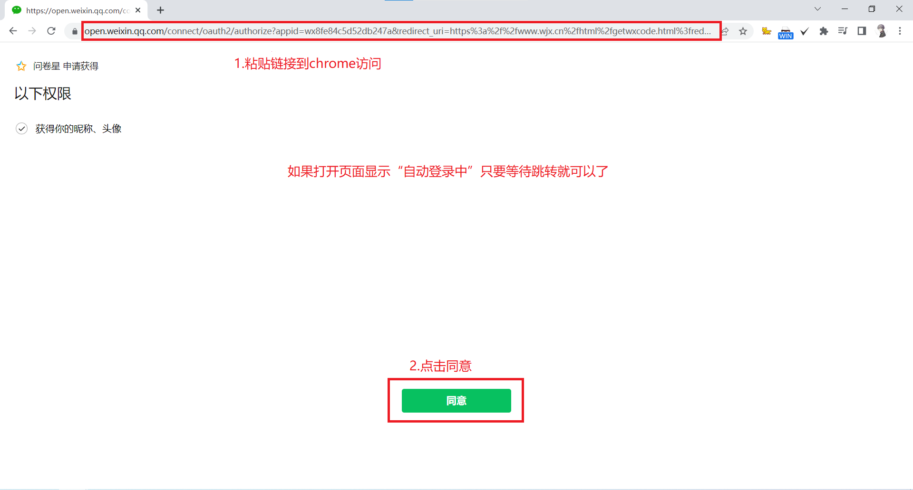

这个就是我的博客第一篇文章了！
用过的人都知道问卷星有很多限制，尤其是不能复制粘贴，每次手敲题目去网上搜寻，找到答案后又要手敲到输入框里，这样可能导致不够时间做。
我使用的浏览器是 Google chrome
# 破解微信作答限制
User-Agent Switcher 是一个可以修改用户代理 (User-Agent，简称 UA) 的浏览器插件。问卷星是根据你的浏览器 UA 判断你是不是从微信打开的，把 UA 改成微信 UA，问卷星就会认为你是从微信访问的。
下载并安装 User-Agent Switcher 插件
打开
User-Agent Switcher选项页右键
User-Agent Switcher图标，点击选项
或点击
扩展程序图标再点击⋮再点击选项
添加一个微信的 UA

根据表格填（填完后点击 Add 添加）
| 标题 | 填写的内容 | 说明 |
|---|---|---|
| New User-agent name | UA 名字 | |
| New User-Agent String | Mozilla/5.0 (Windows NT 6.1; WOW64) AppleWebKit/537.36 (KHTML, like Gecko) Chrome/81.0.4044.138 Safari/537.36 NetType/WIFI MicroMessenger/7.0.20.1781(0x6700143B) WindowsWechat(0x63070517) | Windows 版微信 UA |
| Group | Chrome | 组 |
| Append? | Replace | （默认） |
| Indicator Flag | WIN | （随便填） |
# 使用
修改成微信 UA：打开 User-Agent Switcher 插件，点击 chrome ， 再点击 Wechat
修改回默认 UA：打开 User-Agent Switcher 插件，点击 chrome ， 再点击 Default
User-Agent Switcher 会把所有页面的 UA 都修改掉，每次修改 UA 会自动刷新当前页面。如果需边作答边浏览其他网页使用微信 UA 打开部分网页可能会受到一些限制（如网站不允许使用微信打开），建议使用无痕模式或其他浏览器浏览其他网页。
# 在浏览器中使用微信登录作答
从微信打开问卷星链接
点击一键登录，再复制链接到浏览器打开

注意：一定要在微信授权登录页面复制链接

把复制的链接粘贴到 chrome 浏览器中打开（不是近期登录需要点击 “同意” 按钮才能登录，近期登录过会自动登录）

# 复制粘贴限制
使用 Copy Paste Pro 插件，可以解决网页不给复制粘贴问题。Copy Paste Pro 是可以让你在禁止复制粘贴的网站使用复制粘贴功能，可以隋开随关，无需刷新页面。建议当需要使用复制粘贴再开启功能，开启后会导致网页部分不能正常点击。
使用：点击图标后就开启和关闭，绿色勾开启，灰色勾关闭（只能在当前页面生效，当刷新或跳转其他页面后会自动关闭）
我并不是很推荐使用这个插件，我在使用时遇到了一些问题，我关了还能复制部分文字，不过我觉得问题不大。
# 设备限制
通常情况下，清除 cookie 可以绕过设备限制。
# 更多
使用油猴脚本可以帮助你突破更多的限制和更快的完成问卷。